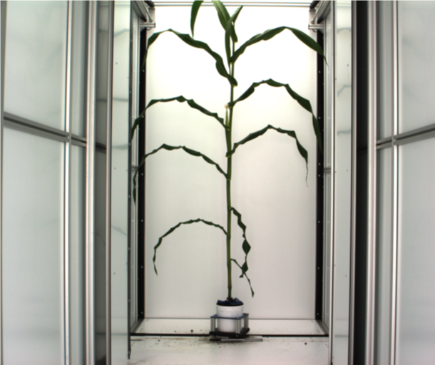
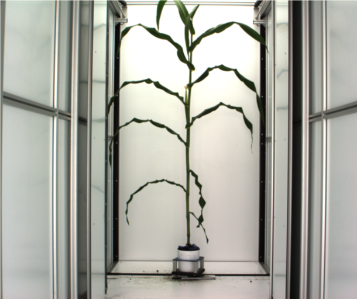
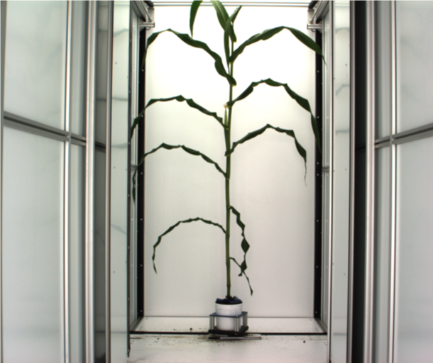

Plant image processing
Feature extraction:
- plant size, height … …
- convex hull, skeleton … …
 

Yumou Qiu
Feature extraction:


image3=readPNG("images/plant3.png")
dim(image3)## [1] 2056 2454 4RGB to Gray image transformation
## Function: RGB Convert to Gray
Color2Gray = function(image, weight = c(0.299, 0.587, 0.114)){
#weight should be positive
weight = weight / sum(weight)
imageGray = image[, , 1] * weight[1] + image[, , 2] * weight[2] + image[, , 3] * weight[3]
return(imageGray)
}
imageGray = Color2Gray(image1)
writePNG(imageGray, "imageGray.png")
imageBinary = function(image, weight = c(-1, 2, -1), threshold1 = 30 / 255, threshold2 = 0.075){
weight = weight / sqrt(sum(weight^2))
imagesum = image[, , 1] + image[, , 2] + image[, , 3]
temp1 = 1 * (imagesum > threshold1)
imageweight = image[, , 1] * weight[1] + image[, , 2] * weight[2] + image[, , 3] * weight[3]
temp2 = 1 * (imageweight > threshold2 * imagesum)
return(temp1 * temp2)
}
imageBW = imageBinary(image1, weight = c(-1, 2, -1), threshold1 = 30 / 255, threshold2 = 0.05)
writePNG(imageBW,"imageBW.png")